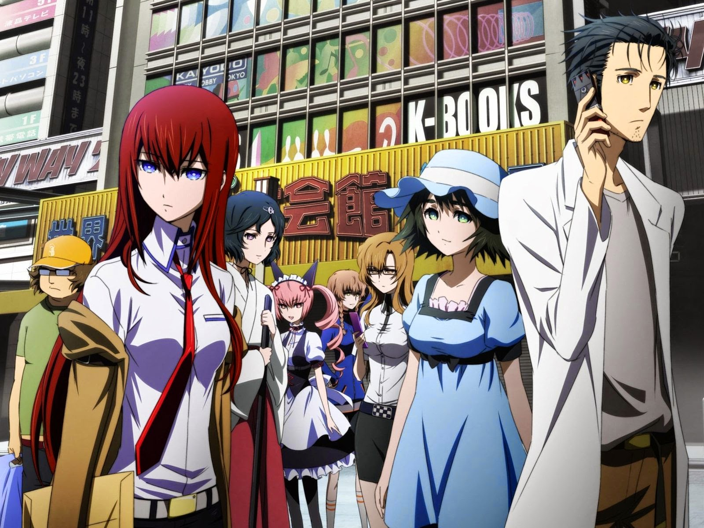
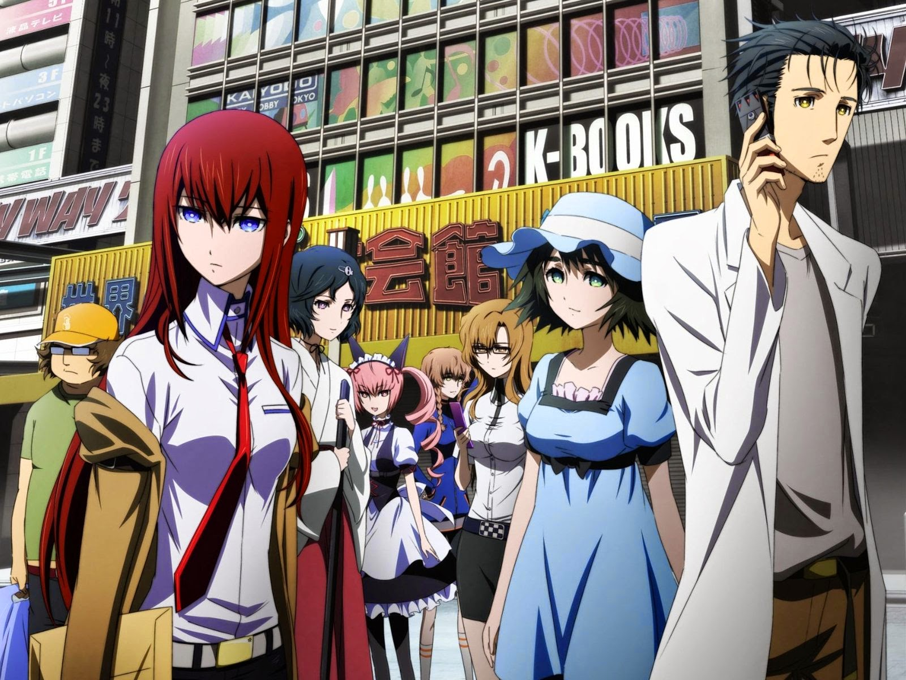

Seja bem-vindo! Está é a nossa primeira página de anime.
Vamos conhecer um pouco mais sobre Animes?
Iremos te apresentar um anime muito interessante, chamado: Steins;gate.
Aqui uma prévia dos nossos queridinhos personagens!
Vamos conhecer um pouco mais sobre Animes?
Iremos te apresentar um anime muito interessante, chamado: Steins;gate.
Aqui uma prévia dos nossos queridinhos personagens!
